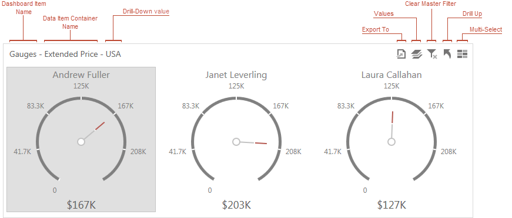

Dashboard Layout
This topic describes the features related to the dashboard layout.
Dashboard Title
The Dashboard Title is located at the top of the dashboard. The dashboard title can contain text or image content, elements selected in the master filter item, and command buttons.

When you hover over the filter icon (), all master filters applied to the dashboard are displayed in the invoked popup.

The dashboard title can contain the following command buttons.
- Export To button - allows you to export the dashboard. To learn more about exporting, see the Exporting topic.
- Parameters button - allows you to modify dashboard parameter values. To learn how to modify dashboard parameter values, see the Requesting Parameter Values topic.
Dashboard Item Caption
Each dashboard item can include a caption that is displayed at the top of this item. The caption contains static text along with other information, as well as command buttons.

Note
If the dashboard item caption is not visible, command buttons are displayed at the top right corner of the item.
The caption of the dashboard item contains the following information and buttons, depending on the dashboard item type.
- Names
- Dashboard Item Name - represents the static text within a dashboard item's caption.
- Data Item Container Name - represents the name of the data item container.
- Interactivity Information
- Drill-Down value - shows a value or values from the current drill-down hierarchy. To learn more, see the Drill-Down topic.
- Command Buttons
- Export to button - allows you to export a dashboard item. To learn how to print individual dashboard items, see the Exporting topic.
- Values button - invokes a drop-down menu that allows you to switch between provided values (in the pie, card, gauge and maps dashboard items). To learn more, see the Data Presentation Basics topic for the corresponding dashboard item.
- Clear Master Filter button - allows you to reset filtering when a dashboard item acts as the Master Filter. To learn more, see the Master Filtering topic.
- Drill Up button - allows you to return to the previous detail level when the drill-down capability is enabled for this item. To learn more, see the Drill-Down topic.
- Multi-Select button - allows multiple element selection in the Master Filter item, when Multiple Master Filter mode is enabled.
Resizing Dashboard Items
You can resize individual items (or a group of items) by dragging their edges.